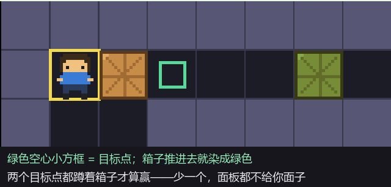
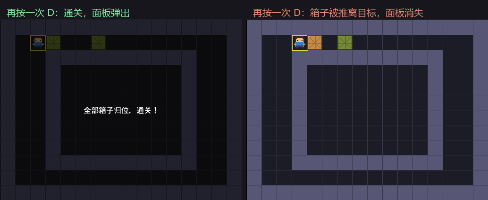
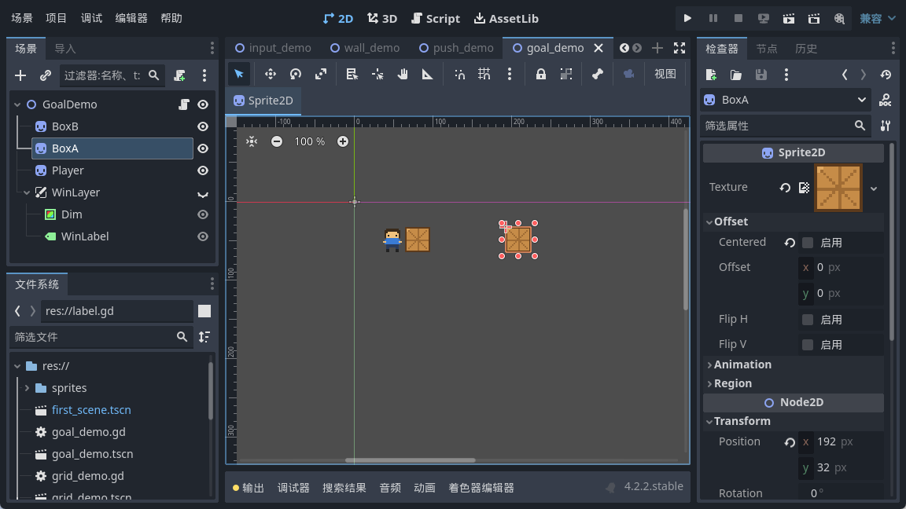
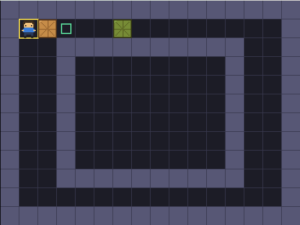
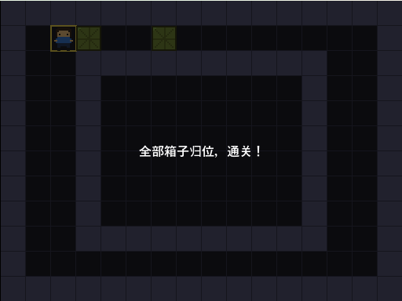

大家好，我是「山岚的运维笔记」。
上一篇箱子推得动又推唔动喇，输赢嘅规矩都定咗。不过佢哋唔知自己应该去边，推嚟推去纯粹锻炼身体。
今日帮箱子搵几个「家」，再搞掂一件更要紧嘅事：几时先至算赢。
跟箱子一个路数。目标点不是画上去的花纹，它也是一组坐标，画的时候就照着这组坐标描框。

箱子推进去，我就把它染成绿色，一眼能看出哪个归位了。
胜利判定我一开始想复杂咗，琢磨住要唔要记「推咗几步」「边个箱子入咗边个坑」。其实不用。
赢，就等于：每个目标点上都蹲着一个箱子。遍历目标点，有一个上面没箱子就直接不算，全都有才算。
这里有个方向问题值得说：要查的是目标点，不是箱子。反过来写（遍历箱子看它在不在目标上）也能跑，但逻辑会绕——箱子数量和目标点数量万一不等，你就得额外处理。
从目标点出发问「你那里有箱子吗」，问法跟需求一一对应，读起来不用拐弯。
箱子染绿这件事，我写成一个统一的函数，数据一变就调它。里面干两件事：给箱子染色，顺便决定面板显不显示。
染色用的是 Godot 里的 modulate 属性，它是乘在原来颜色上的，填白色就等于不上色、原样。
这里有个习惯我想推荐：数据改完，统一走一个函数刷外观，别在每个改动的地方各写一遍染色的代码。将来要加「归位时播个音效」「归位数显示在角落」，也只改这一个函数。
这是本篇我最想说的一句。
我第一版系推完箱子之后判一次，赢咗就弹面板，完事。结果呢？通关之后我又将箱子推走咗，面板仲挂喺度，似条撕唔走嘅横幅。
问题就出在「判一次」上。胜利不是一个事件，是一个状态。 状态这东西，得每次数据变了就重新算。

改成每步都问之后，推离目标点，面板自己就没了。
面板是 UI，得挂在 CanvasLayer 下面。普通节点跟着场景走，摄像机一动它就跑；CanvasLayer 里的东西钉在屏幕上，不管游戏画面怎么滚。UI 就该放这一层。

节点结构是 CanvasLayer 下面挂一个半透明的色块当遮罩，再挂一个 Label 写字。想显示就把这一层的 visible 打开，想隐藏就关掉，一行搞定。
起点我摆成这样：一个箱子一开始就在目标点上（绿的），另一个还差一格。

呢个叫二分之一，唔算赢，面板唔畀面。

面板上就一行字。字不重要，重要的是它为什么这时候出现——因为判定函数这时候终于返回了「是」。
今天三句话。目标点也是一组坐标，跟箱子一个路数。胜利判定是遍历目标点问「你那里有箱子吗」，别绕。胜利是个状态，每走一步都得重新问一次，别只判一次。
而家游戏有输赢喇，不过推错一步净系得个睇字。下一篇帮佢加后悔药——Z 键撤销，用栈将行过嘅每一步记低。
箱子识返屋企喇，呢篇抵一个点赞、在看；想跟足全程嘅，关注「山岚的运维笔记」。评论区有问必回。
（配套工程在 GitHub 的 Boxman 仓库 tutorial 分支，每篇一个进度 tag，随时能下到对应版本。）